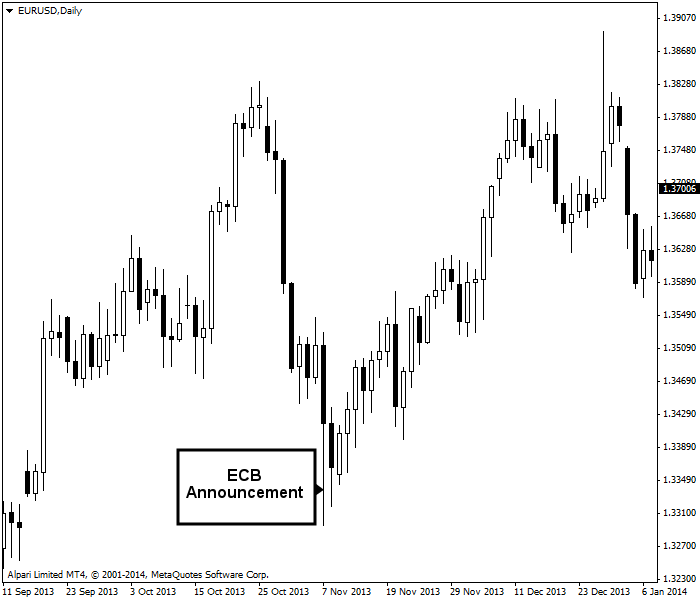

<!DOCTYPE html>
<html>
</html>
<head>
  <meta charset="utf-8">
  <meta http-equiv="X-UA-Compatible" content="IE=edge">
  <title>外汇站（fx-z.com） - 货币价格为何变化？</title>
  <meta name="description" content="">
  <meta name="viewport" content="width=device-width, initial-scale=1">
  <meta name="robots" content="all,follow">
  <!-- Bootstrap CSS-->
  <link rel="stylesheet" href="vendor/bootstrap/css/bootstrap.min.css">
  <!-- Font Awesome CSS-->
  <link rel="stylesheet" href="vendor/font-awesome/css/font-awesome.min.css">
  <!-- Google fonts - Roboto-->
  <link rel="stylesheet" href="https://fonts.googleapis.com/css?family=Roboto:400,300,700,400italic">
  <!-- owl carousel-->
  <link rel="stylesheet" href="vendor/owl.carousel/assets/owl.carousel.css">
  <link rel="stylesheet" href="vendor/owl.carousel/assets/owl.theme.default.css">
  <!-- theme stylesheet-->
  <link rel="stylesheet" href="css/style.default.css" id="theme-stylesheet">
  <!-- Custom stylesheet - for your changes-->
  <link rel="stylesheet" href="css/custom.css">
  <!-- Favicon-->
  <link rel="shortcut icon" href="img/favicon.png">
  <!-- Tweaks for older IEs--><!--[if lt IE 9]>
    <script src="https://oss.maxcdn.com/html5shiv/3.7.3/html5shiv.min.js"></script>
    <script src="https://oss.maxcdn.com/respond/1.4.2/respond.min.js"></script><![endif]-->
</head>
<body>
  <div id="all">
    <div class="container-fluid">
      <div class="row row-offcanvas row-offcanvas-left"> 
        <!--   *** SIDEBAR ***-->
        <div id="sidebar" class="col-md-4 col-lg-3 sidebar-offcanvas">
          <div class="sidebar-content">
            <h1 class="sidebar-heading"> <a href="https://fx-z.com">fx-z.com</a></h1>
            <p class="sidebar-p">介绍外汇相关的基本知识，告诉您如何进行自己的技术面和基本面分析，讲解先进的交易理念，并且为您阐述失败交易者与专业交易者之间的真正区别。 </p>
            <p class="sidebar-p">通过这些课程的学习，您将学会如何根据自己的优势来应用情绪分析，还将了解真实世界的事件会对货币汇率产生什么影响，央行在外汇市场中所发挥的作用，以及交易者在颇受欢迎的即期外汇交易中有哪些选择方案。 </p>
            <ul class="sidebar-menu">
                <!-- Link-->
                <li class="sidebar-item"><a href="https://fx-z.com" class="sidebar-link">首页</a></li>
                <!-- Link-->
                <li class="sidebar-item"><a href="cihui.html" class="sidebar-link">外汇词汇</a></li>
                <!-- Link-->
                <li class="sidebar-item"><a href="ebook.html" class="sidebar-link">获取外汇电子书</a></li>
            </ul>
            <p class="social"><a href="https://www.forextimechina.com.cn/zh?form=IZIN" target="_blank"data-animate-hover="pulse" class="external facebook"><i class="fa fa-eur"></i></a><a href="https://www.forextimechina.com.cn/zh?form=IZIN" target="_blank" data-animate-hover="pulse" class="external gplus"><i class="fa fa-gbp"></i></a><a href="https://www.forextimechina.com.cn/zh?form=IZIN" target="_blank" data-animate-hover="pulse" class="external twitter"><i class="fa fa-rmb"></i></a><a href="https://www.forextimechina.com.cn/zh?form=IZIN" target="_blank" title="" class="external instagram"><i class="fa fa-dollar"></i></a><a href="https://www.forextimechina.com.cn/zh?form=IZIN" target="_blank" data-animate-hover="pulse" class="email"><i class="fa fa-money"></i></a></p>
            <div class="copyright text-center text-md-left">
             
              
            </div>
          </div>
        </div>
        <!--   *** SIDEBAR END ***  -->
        <!--   *** DETAIL ***-->
        <div class="col-md-8 col-lg-9 content-column white-background">
          <div class="small-navbar d-flex d-md-none">
            <button type="button" data-toggle="offcanvas" class="btn btn-outline-primary"> <i class="fa fa-align-left mr-2"></i>菜单</button>
            <h1 class="small-navbar-heading"> <a href="https://fx-z.com/1-3.html">下一篇 </a></h1>
          </div>
          <div class="row">
            <div class="col-xl-10">
              <div class="content-column-content">
                <h1>货币价格为何变化？</h1>
                <p>
    某天，您发现欧元报价为 1.3832，而 9 天以后，报价变为 1.3296。（这些价格从 2013-10-25 的高点价向 2013-11-07 的低点价变动。）价格变动 536 点并不反常。我们稍后再来讨论什么是正常的以及我们如何知道什么是正常的，但目前，您必须承认的是，外汇价格可能出现幅度极大、速度极快的变化。
</p>
<p>
    这种变化的背后有什么原理呢？一个显而易见的答案是，欧元交易者正在改变他们对欧元价值或美元价值的看法。实际上，由于无人知道或无法猜测到真正的价值，欧元交易者正在猜测其他人认为欧元或美元未来的适当价格是多少。如果欧元交易者今天用 1.3832 卖出，这是因为他认为一些数据或新闻对欧元不利，进而导致其他人不愿意给出今天的价格。未来可能是两分钟、两天或两周，但交易者的技能在于判断市场内其他交易者对数据或新闻的解读概率。
</p>
<p>
    换言之，欧元交易者在解读其他交易者对欧元未来需求的看法。
</p>
<p>
    这听起来颇为荒唐，但这是描述该过程的准确方式。欧元交易者的猜测有三项要素。
</p>
<p>
    <strong>要素一：图表</strong>
</p>
<p>
    欧元被“超买”。这一词语是指大多数欧元交易者相信欧元应该会走高，因而创建了大型多头头寸。图表交易者并不在意市场内其他交易者的观点是否错误。他发现，从已经出现的上行走势来看，其他交易者已经对多头头寸过度投资。
</p>
<p>
    如果每个人都已买入欧元并且没有现金或借贷额度可以加仓，则头寸将无人接盘。当持仓者为了释放用于新交易的现金而了结头寸时，价格必定下跌。关注图表的人士使用多种技术指标中的任意一种来判断市场是否被过度投资或超买。最常被用到的指标是相对强弱指数（也称为 RSI）。另一项指标是随机震荡指标。
</p>
<p>
    重要的是要注意，在外汇中，我们没有类似股票成交量等交易量数据。如果我们知道交易量，我们会发现随着价格上涨，交易量未能成比例上涨。在股市中，价格上涨与交易量下跌的偏离是用于评估股票是否被超买的经典技巧。可惜，在外汇中没有交易量工具。
</p>
<p>
    <strong>要素二：经济学</strong>
</p>
<p>
    买东西的唯一目的是使用它或者之后以更高的价格将它卖出。虽然外汇交易者不会真的用欧元来购买商品和服务，但他预计其他人将希望用欧元的购买力来买东西，这些东西不仅包括袜子和理发服务，还包括以欧元计价的证券。因此，外汇交易者遵循与欧元对美元相对购买力有关的宏观经济学和新闻，包括通胀（或通缩）、薪酬上涨以及经济的稳健性等。在任何时候，市场可以作为整体，就哪些经济体正在增长及其增长速度，以及哪些经济体面临着迫切需要政府和央行来应对的经济问题来达成共识。通常，交易者对经济的看法过于简单，甚至颇为粗糙，而且通常归结于一两个博人眼球的词汇描述，但是纠结于这些看法的成熟性是没有意义的，因为这些看法可以推动市场。
</p>
<p>
    <strong>要素三：新闻</strong>
</p>
<p>
    基于交易者对新闻的判断背景的宏观经济学。最重要的新闻是指调息或央行的其他刺激/紧缩措施。一个典型的示例是欧洲央行（ECB）于 2013 年 11 月 7 日的利率决议。由于通胀率降至新低，市场担忧日本式通缩的出现，外汇评论家一致认为欧洲央行将降息或者为银行提供负利率以鼓励银行进一步放贷。相应地，欧元进入急剧的下跌通道。不过，欧洲央行拒绝降息，而欧元在同一天反转，几乎上涨至其 8 天前的价格。
</p>
<p>
    欧洲央行公告于 2013 年 11 月影响 EUR/USD——日线图。
</p>
<p>
    您很难说欧元已逆转为上涨走势，因为交易者正在思考购买力平价或其他相关经济数据——此处的走势归结于欧洲央行的利率决策，而由于市场预期被证明是错误的，走势略微走强。
</p>
<p>
    <br/>
</p>
<p>
    <br/>
</p>
              </div>
            </div>
          </div>
        </div>
      </div>
    </div>
  </div>
  <!-- JavaScript files-->
  <script src="vendor/jquery/jquery.min.js"></script>
  <script src="vendor/popper.js/umd/popper.min.js"> </script>
  <script src="vendor/bootstrap/js/bootstrap.min.js"></script>
  <script src="vendor/jquery.cookie/jquery.cookie.js"> </script>
  <script src="vendor/owl.carousel/owl.carousel.min.js"></script>
  <script src="vendor/masonry-layout/masonry.pkgd.min.js"></script>
  <script src="js/front.js"></script>
</body>